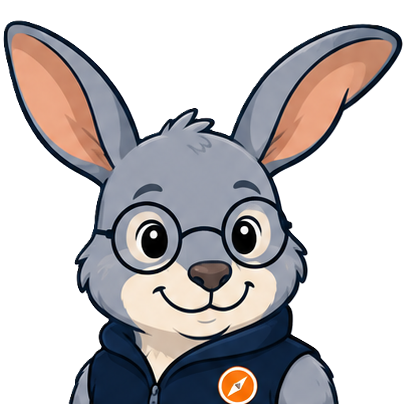

SELLING
Sell something
Find the right offering, qualify the customer, get current collateral and know who to bring in.
Explore solutions →

StaffNet Intelligent DirectorySid becomes the experience and trust layer across everything that already exists — StaffNet, collaboration sites, pages and documents. Not a replacement: an intelligent directory that stands on its own and routes you to the recognised, owned destination. Start with what you need to do, not where somebody decided to store it.
Seller-first access to offers, qualification, industry context and experts.
Find the right offering, qualify the customer, get current collateral and know who to bring in.
Reach current instructions, systems, forms, reports and human escalation routes.
Bring together customer priorities, relevant solutions, current assets and collaboration.
Move from information to its owner, an SME, a working group or a paired Teams space.
Industry remains prominent without duplicating the source content.
Role-aware examples from the embedded demonstration catalogue.
Everything Sid serves up can be consumed the way you actually work.